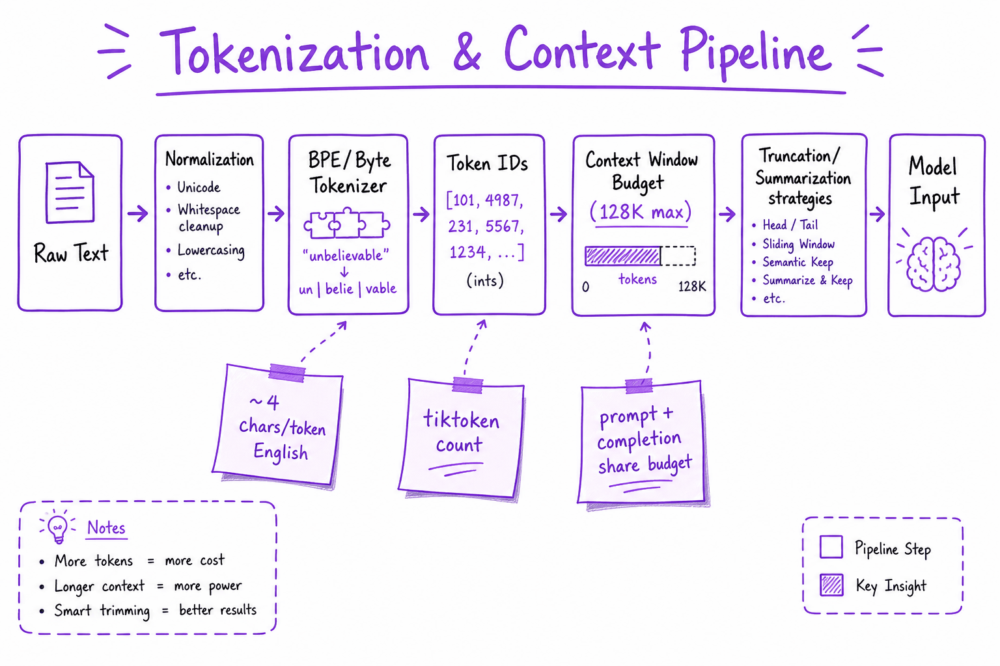
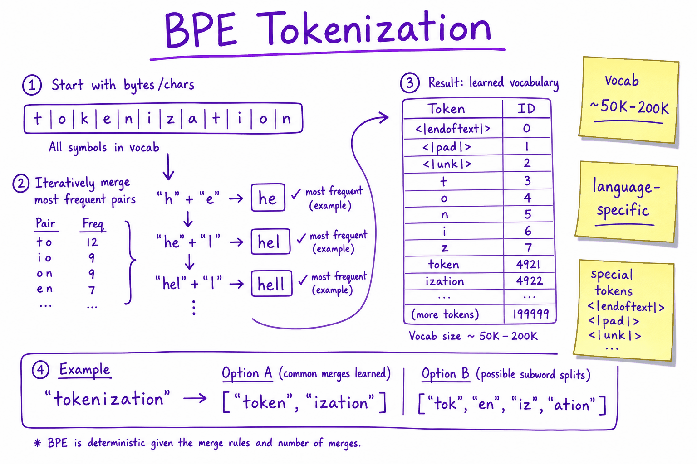
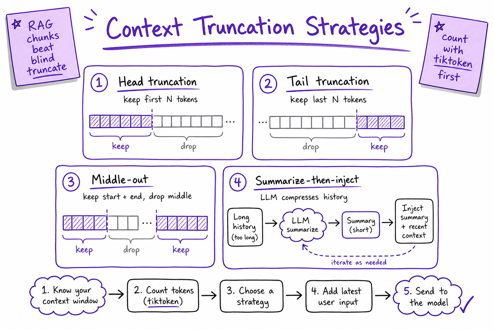

Tokenization & Context Window // Fundamentals
BPE and byte-level tokenizers, counting tokens with tiktoken, context budget math, and truncation strategies that prevent silent prompt overflow in production.

Raw text flows through normalization and BPE tokenization into token IDs that share a fixed context budget with the model completion.
01 — What & Why
LLMs operate on token IDs, not characters. Tokenization determines cost, latency, context fit, and whether your prompt silently truncates. Mis-counting tokens is a top production bug.
Context limits and KV memory are covered in Context Window & KV Cache; this sheet is getting text into IDs safely.
01a — Core Concepts
| Term | Definition | Gotcha |
|---|---|---|
| BPE | Byte-Pair Encoding merges frequent pairs | Vocab 50K–200K typical |
| Byte-level | UTF-8 bytes as base alphabet | No UNK for rare Unicode |
| Context window | Max prompt + completion tokens | Shared budget, not prompt-only |
| tiktoken | OpenAI-compatible fast BPE counter | Model-specific encodings |
| Special tokens | <|im_start|>, <|endoftext|>, tool markers | Counted in budget |
01b — API Surface
import tiktoken
enc = tiktoken.encoding_for_model("gpt-4o")
tokens = enc.encode("Hello, world!")
print(len(tokens)) # billable count
text = enc.decode(tokens[:50]) # partial decode
# HuggingFace
tokenizer = AutoTokenizer.from_pretrained("meta-llama/Llama-3-8B")
ids = tokenizer("Hello", add_special_tokens=True)["input_ids"]02 — When to Use / When NOT
| Strategy | Use When | Skip When |
|---|---|---|
| Pre-count in app | Every user-facing feature | Never skip in prod |
| Summarize history | Long chat threads | Single-shot Q&A |
| RAG chunks | Large corpora | Whole doc fits in window |
| Char-based limits | Quick UI estimate only | Billing or hard limits |
03 — Architecture
User text -> Unicode normalize -> BPE merge table -> token IDs
-> budget check (prompt + max_completion <= limit)
-> truncate | summarize | retrieve | reject04 — Deep Dive: BPE Tokenization

BPE iteratively merges frequent byte or character pairs into subword vocabulary entries.
Start with byte/char vocab; merge most frequent adjacent pairs until vocab size reached. Common words become single tokens; rare words split into subwords. GPT-4 uses cl100k_base; Llama 3 uses its own SentencePiece table.
05 — Deep Dive: Counting & Budgeting
def fits(prompt_ids: list[int], max_out: int, limit: int) -> bool:
return len(prompt_ids) + max_out <= limit
# Always reserve completion headroom
PROMPT_BUDGET = 120_000 # for 128K model with 8K outputRule: ~4 characters per token for English (rough). Code and JSON are denser. Always count with the same tokenizer as the model.
06 — Deep Dive: Truncation Strategies

Head, tail, middle-out, and summarize-then-inject strategies for fitting context budget.
- Head: keep system + recent user (drops old history)
- Middle-out: keep start + end of long docs
- Summarize: LLM compresses old turns
- RAG: retrieve top-k chunks instead of full doc
07 — Deep Dive: Special Tokens
Chat templates insert role markers (<|im_start|>user). Tool calls add JSON blobs. Each counts toward budget. Use tokenizer.apply_chat_template for exact counts.
08 — Deep Dive: Multilingual & Code
Non-Latin scripts often use more tokens per character. Code tokenizes densely (symbols are separate tokens). Budget 1.5–2× for CJK vs English prose.
09 — Production & Ops
- Reject or trim before API call — avoid 400 context errors
- Log token counts per request for cost dashboards
- Version tokenizer with model deployment
- See Cost & Latency Tradeoffs for $/token impact
10 — Where It Shows Up
- LLM Fundamentals — tokens as LM input
- Context Window & KV Cache — seq_len from token count
- Prompt Engineering — few-shot eats context
- RAG End-to-End — chunk sizing in tokens
- Cost & Latency Tradeoffs — billing per token
11 — Common Pitfalls
- Char-length limits instead of token counts
- Forgetting completion tokens in budget
- Wrong tokenizer for model version
- Silent API truncation without warning
- Not counting tool/schema overhead
12 — Interview Q&A
What is a token?
How does BPE work?
Why token counts differ across models?
How do you count tokens in production?
prompt_tokens + max_tokens vs context window?
Best truncation for chat history?
Middle-out truncation?
Special tokens in budget?
Code vs prose token density?
What happens on context overflow?
Tokenization and training-serving skew?
SDE3: design context management for 200K chat app?
Learn it in full
The LLM fundamentals topics, with worked examples, code and exercises.
- What an LLM is — A next-token predictor, the language-modeling objective, model families and scaling laws.
- Transformers & attention — Embeddings, attention, multi-head and GQA, RoPE, the block, a mini-GPT, FLOPs, FlashAttention and MoE.
- Tokens, context & cost — BPE tokenization, the context window, and what every token costs.
- How LLMs are trained — Pretraining, instruction tuning, chat templates, reasoning models, evaluating LLMs, and prompting vs RAG vs fine-tuning.
- Calling a model — The API call end to end: messages, roles, streaming, errors and retries.
- Decoding & sampling — Greedy, temperature, top-k, top-p and the other knobs, with a live temperature lab.
- Limits & hallucination — What LLMs get wrong by design, and how to design around it.